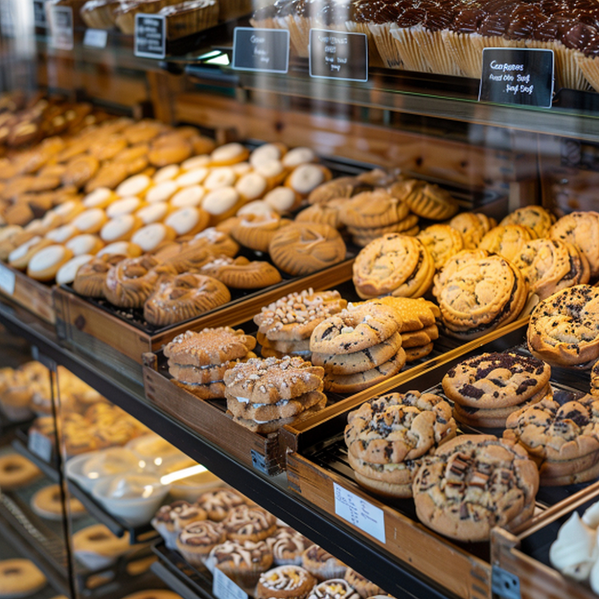

36-Hour Naturally Leavened Sourdough
We ferment our country boules, seeded batards, and honey oat loaves for 36 hours in cold stone retarders so every loaf develops a blistered crust, open crumb, and mild tang.
Order daily sourdough loaves, morning pastry boxes, or custom celebration cakes for Oak Street counter pickup.

Before the sun comes up on Oak Street, our bakers load the stone deck ovens with country sourdough boules, seeded batards, and flaky morning pastries for our Minneapolis neighbors. Starting at 4:00 AM inside our Oak Street bakehouse, we mix and bake hearth loaves, laminated pastries, and layer cakes from scratch using stone-milled Midwest flour and cultured butter.
We ferment our country boules, seeded batards, and honey oat loaves for 36 hours in cold stone retarders so every loaf develops a blistered crust, open crumb, and mild tang.
Our front pastry case opens at 6:30 AM with three-day cultured butter croissants, dark chocolate pain au chocolat, aged Gruyere scones, and seasonal berry danishes.
For family birthdays and office morning meetings, we also bake six-inch and nine-inch layer cakes alongside dozen and thirty-piece pastry platters with counter pickup.

Featured at the counter this week is our Brown Butter Cardamom Morning Bun ($5.00 each, or $27.00 per half-dozen box when reserved by Friday at noon), made by twisting browned butter and ground cardamom into brioche croissant dough.